Θα δημιουργήσουμε τα components my-footer, shop-services, navigation-bar και product, τα οποία θα χρησιμοποιήσουμε, για τις υπόλοιπες σελίδες εφαρμογής.
Δημιουργούμε το component shop-services και το τοποθετούμε στο φάκελο components.
ng generate component shop-services
shop-services.component.ts
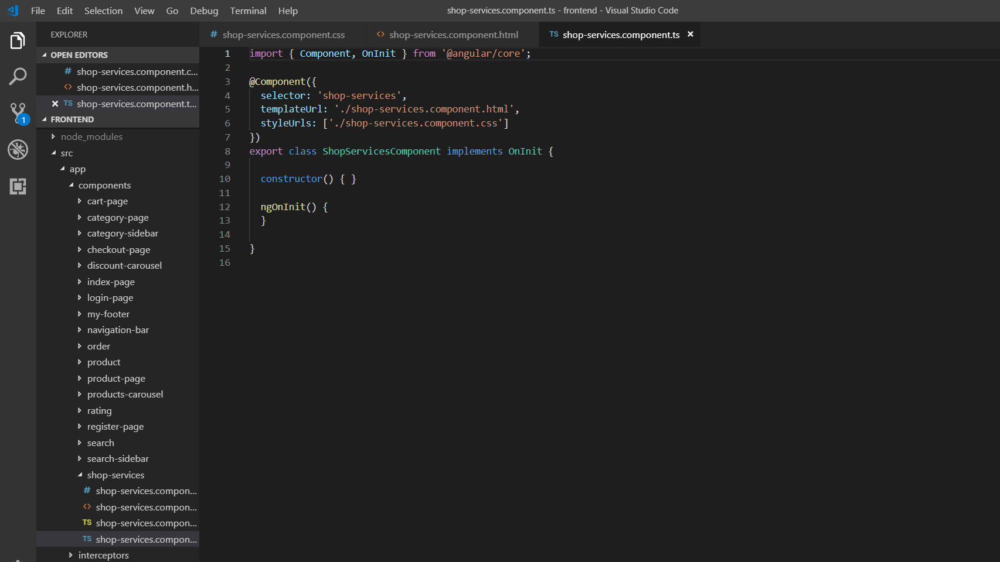shop-services.component.html : Περιέχει τρεις στήλες, με τις υπηρεσίες του e-shop.
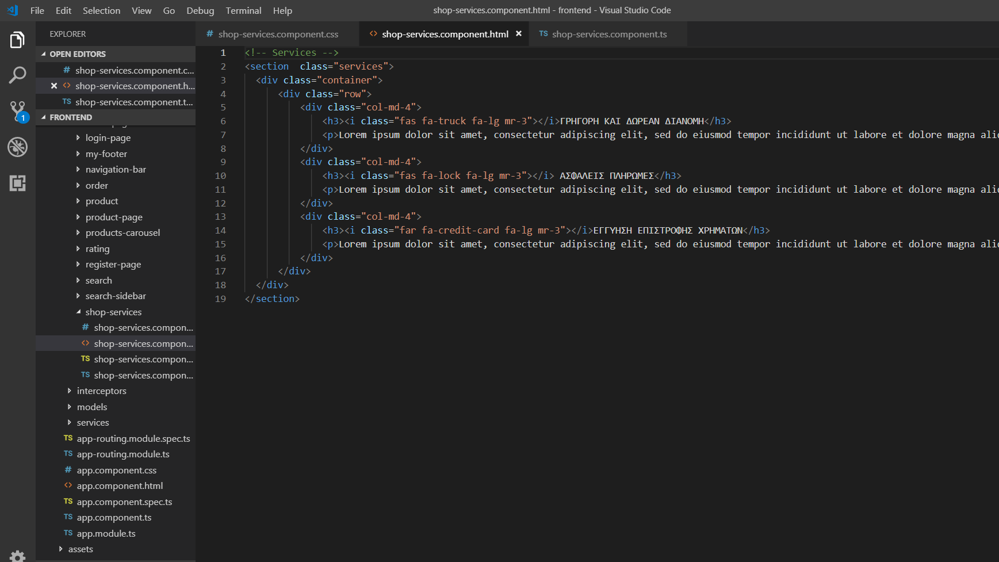shop-services.component.css
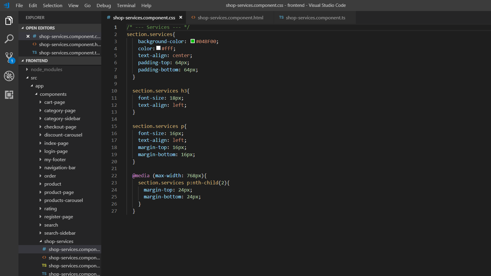Τα components shop-services και my-footer,αποτελούν αυτό το κομμάτι της οθόνης.
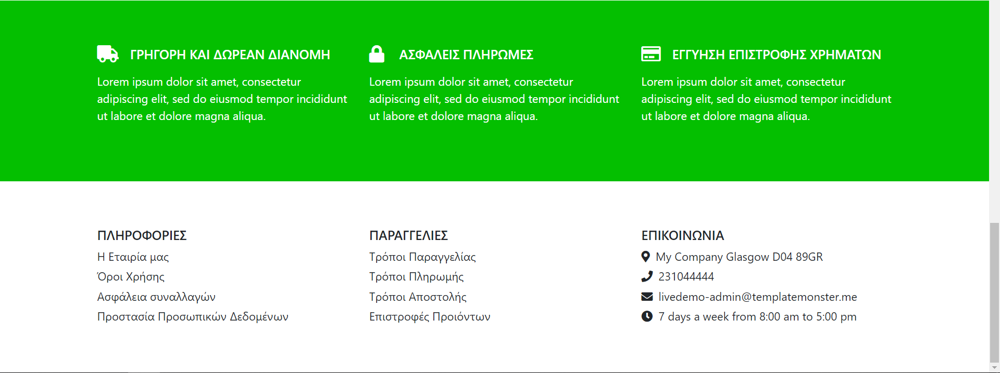Δημιουργούμε το component product και το τοποθετούμε στο φάκελο components. Εμφανίζει ένα συγκεκριμένο προϊόν και στοιχεία του, όπως εταιρία, όνομα και τιμή.
ng generate component product
Δημιουργούμε μια κλάση Product, η οποία θα αναπαριστά το προϊόν. Προσθέτουμε τα properties, που έχει το entity Product.java. Επίσης, δημιουργούμε τα αντίστοιχα models Category και Brand., που αναπαριστούν την εταιρία και κατηγορία του προϊόντος και περιέχονται στην κλάση Product.ts .
brand.ts
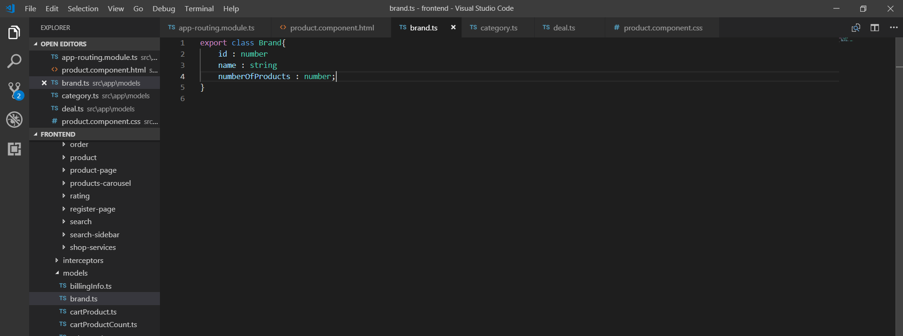category.ts
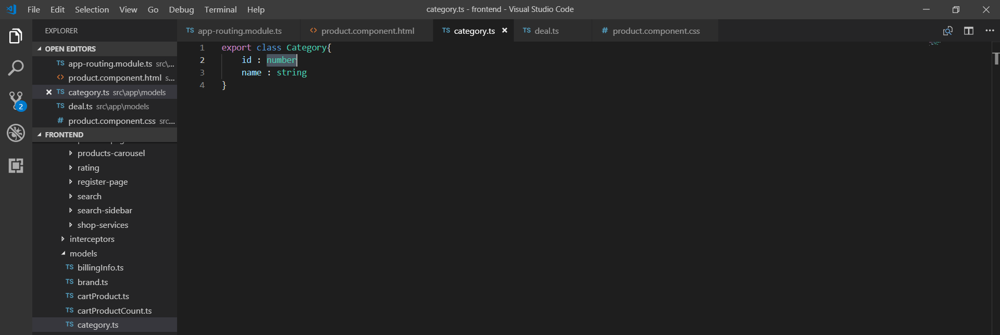product.ts
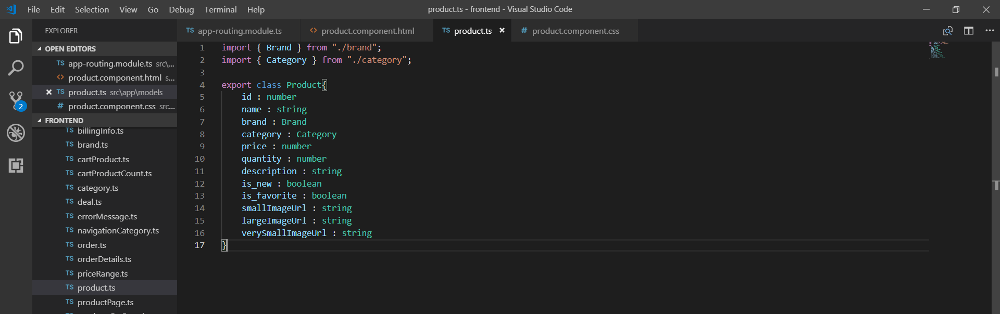product.component.ts
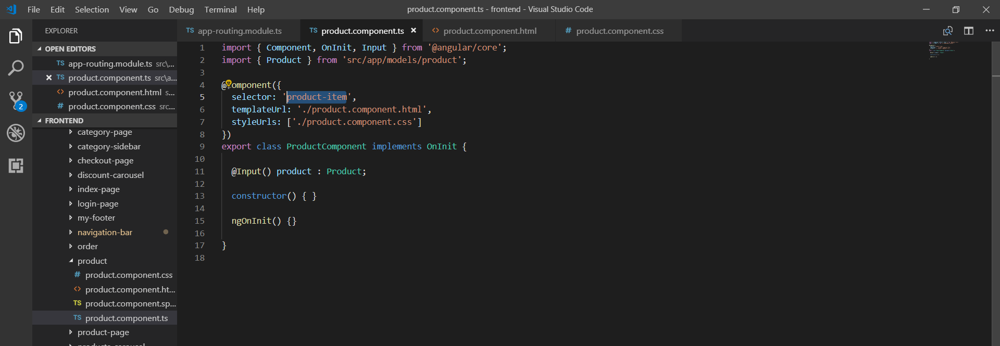product.component.html
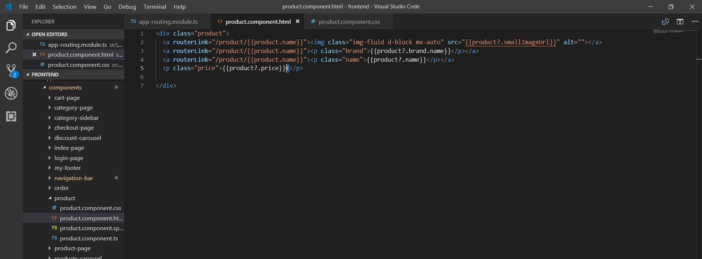product.component.css
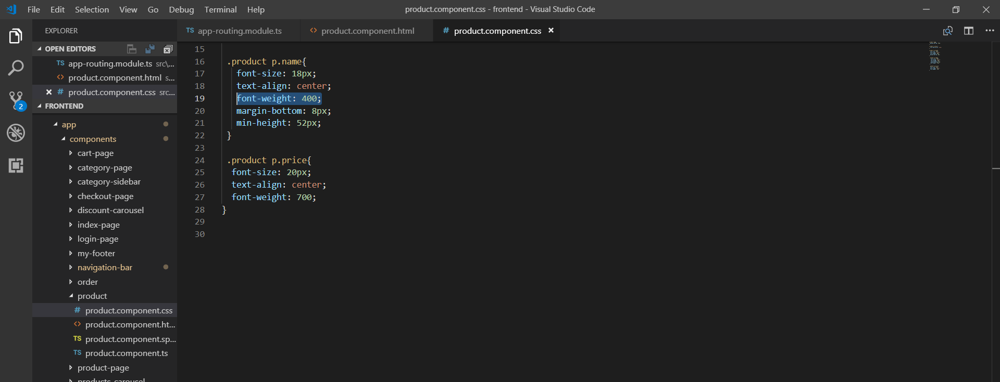Το component product αποτελεί αυτό το κομμάτι της οθόνης.
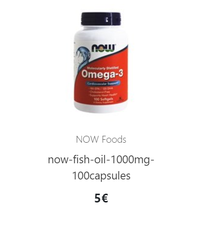